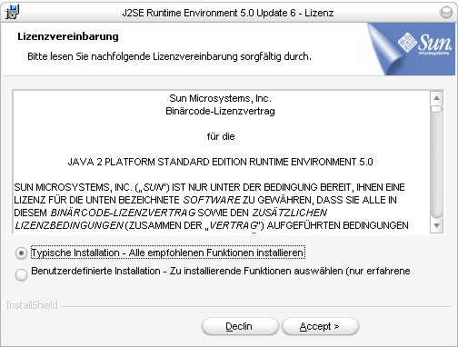
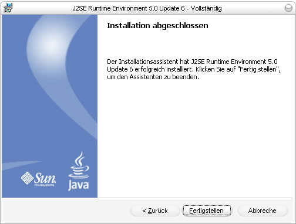

|
OVT
Software - Java Installationsanleitung
Vorab - falls noch nicht geschehen - legen Sie in Ihrer Datei "Eigene Dateien" einen neuen Ordner "Overtür" an, wo Sie alle für Ihre Zusammenarbeit mit Overtür anfallenden Programme und Dateien
speichern werden.

Lesen Sie die Lizenzvereinbarung durch, und lassen Sie den Punkt Typische Installation markiert. Um die Bedingungen zu akzeptieren, klicken Sie auf Accept , um mit der Installation fortzufahren.

In einigen kurzzeitig eingeblendeten Dialogen werden die letzten Schritte des Installationsvorgangs bestätigt, und es wird eine Bestätigungsmeldung über den ordnungsgemäßen Abschluss der Installation angezeigt. Klicken Sie hier auf Fertigstellen und schließen Sie damit die Installation ab. |
|
OVT Over'tür 2006, Weilburg |